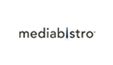
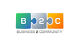
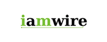
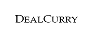
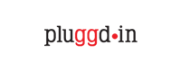

unmetric
Free Trial Sign Up
Login
Menu
We’re in the News.
We get our share of time in the limelight.
.
How Social Is Your Fitness Brand
Oct 31, 2013
Rental car companies court customers on social media
Oct 21, 2013
Unmetric Raises $5.5M
SEP 19, 2013
Unmetric Report details Social Media Winners and Losers among Top Brands
SEP 28, 2012
Lux Narayan: How to Hack B2B Marketing using Social Media
Mar 15, 2013
The Most Popular Branded Boards on Pinterest
MAY 08, 2013
How Brands’ “Harlem Shake” Memes Fared on YouTube and Facebook
MAR 04, 2013
The Dallas Cowboys are NFL Champs – on Facebook
DEC 04, 2012
Hey, Sexy Marketing! Big Brands Go “Gangnam Style”
Dec 03, 2012
Olympic Sponsors go for Gold Online [INFOGRAPHIC]
AUG 16, 2012
Fast Food Loves Facebook: Restaurant Chains on Social Media [INFOGRAPHIC]
JUL 14, 2012
Unmetric Helps Businesses Keep a Social Eye on the Competition
APR 10, 2012
Unmetric launches Social Media Benchmarking for Brands on Pinterest
SEP 07, 2012
“Burger Wars”, McDonald‘s is eating Burger King‘s lunch
JUl 16, 2012
‘Klout for brands’ Unmetric now lets you keep an eye on the competition
APR 12, 2012
Wearable Fitness Adoption Battle: How to Leverage Social Media Successfully
NOV 20, 2013
7 Things Every Brand Can Learn from Chobani’s Recall Crisis on Social Media
SEP 13, 2013
Unmetric Raises $5.5M to Help Companies Measure the Competition on Social Media
SEP 19, 2013
Unmetric Launches Satisfaction Metrics to Track How Companies Tweet at Customers
NOV 7, 2012
Unmetric Scores the Virality of Brands‘ YouTube Campaigns
JUN 29, 2012
Luxury Brands on Social Media: All They Have to Do is Show Up
Oct 30, 2012
3 Reasons why there’s No Measuring ROI On Social Media
Aug 28, 2012
Lakers Beat Heat... in Social Media
JUN 13, 2012
Unmetric Raises $5.5 Million as Social Media Industry Gains Steam
SEP 19, 2013
Unmetric gets Funding to help Brands Gauge their Social Media Clout
APR 11, 2012
How Insurance Companies are Targeting You on Social Media
FEB 02, 2013
Who Wins the NBA Social Media Finals?
JUN 14, 2012
With Class in Session, Automakers Finally get their Social Media Report Card
FEB 14, 2012
Unmetric Blasts Your Company with Social Media Data, Gets $5.5M
SEP 19, 2013
Social Media Benchmarking Company helps Brands Gain Insights into Effectiveness of Social Campaigns
SEP 19, 2013
Social Analytics Startup Unmetric Raises $5.5 Million
SEP 19, 2013
Unmetric Secures $5.5 Million in Funding, Enhances Brand Social Influence Metrics
SEP 19, 2013
And some more…


Around the world


